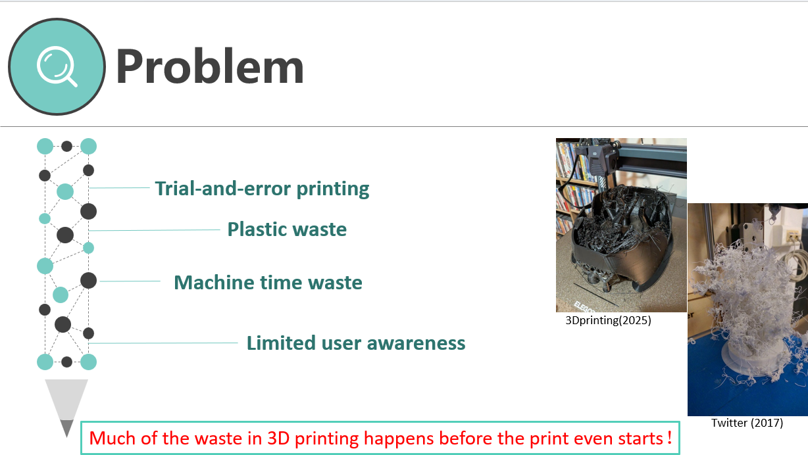
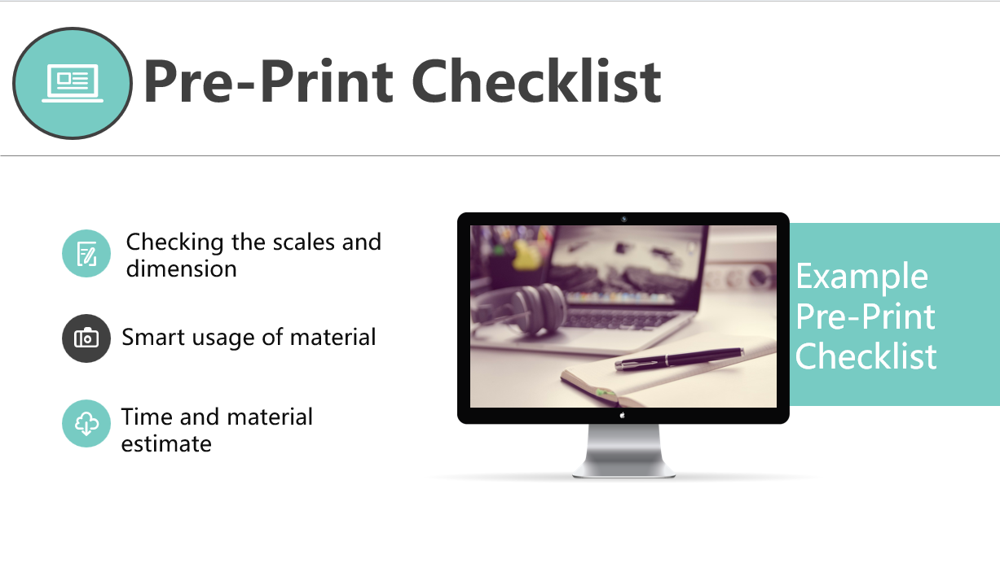

Prevent avoidable reprints
Checking scale and dimensions before slicing reduces trial-and-error caused by an incorrectly sized model.
Engineers Without Borders UK · Three-person team · Feb–Mar 2026
A practical pre-print strategy designed to reduce avoidable material and machine-time waste.

Problem analysis
Trial-and-error printing wastes plastic and machine time. The team identified poor pre-print decisions as an actionable cause.
A lightweight checklist can fit existing school and workshop routines without changing the machine itself.
Proposed solution
A pre-print decision checks scale, material and time before the printer starts.

Checking scale and dimensions before slicing reduces trial-and-error caused by an incorrectly sized model.
Considering material use before the machine starts makes waste prevention part of the printing decision.
Estimating print time and material demand helps the user decide whether a job should proceed.
Final presentation
The team shaped the idea into a three-minute narrative connecting the waste problem, intended users and proposed checklist.
I organised the presentation structure, aligned team contributions and kept the submission focused on one practical intervention.
I then led the PowerPoint development, audio editing and final video assembly, incorporating team feedback before submission.
Contribution and outcome
Organised team progress and contributed to planning and idea development. I also kept the work moving towards the final submission deadline.
Structured the PowerPoint around the problem, audience and proposed checklist. This gave the three-person submission one consistent narrative.
Edited the audio, assembled the final video and incorporated team feedback. The final edit aligned the narration, slide timing and visual sequence.
The project strengthened my coordination, technical communication and multimedia presentation skills.